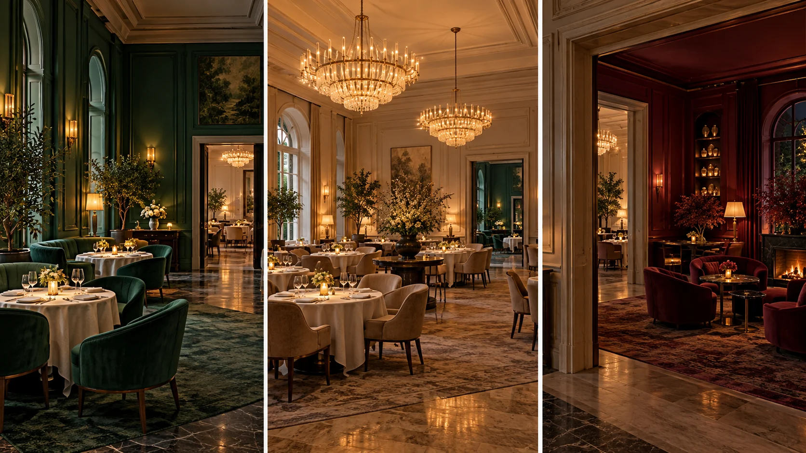

F11 · 고급 · FPV
서로 다른 방의 분위기를 연결하기
방마다 중심 대상과 머무는 시간을 달리 정해 이동이 공간의 개성을 지우지 않도록 구성한다.
그림에서 확인할 세 가지방의 분위기를 읽을 시간을 남긴다
1초록 방의 자연물
식물과 부드러운 초록빛이 첫 공간의 인상을 만든다. 장식의 수보다 시선이 집중할 대상과 지나갈 빈 공간의 관계를 살핀다.
2두 샹들리에의 깊이
밝은 방의 두 샹들리에가 겹치는 정도를 본다. 카메라가 보는 각도가 달라지면 앞뒤 관계가 바뀌며 공간의 깊이가 드러난다.
3붉은 방의 머무름
마지막 방은 색과 좌석 배치가 앞 장면과 다르다. 새로운 공간을 알아보기도 전에 지나가지 않도록 중심이 명확한지 읽는다.
촬영 설계
촬영을 이렇게 설계한다
방의 중심을 하나 고른다
학습 장면에서는 초록 방의 식물, 밝은 방의 샹들리에, 붉은 방의 좌석처럼 각 공간을 대표할 대상을 고른다. 모든 장식을 동등하게 훑기보다 관객의 첫 시선이 머물 곳을 정한다.
대상이 읽힐 시간을 준다
샹들리에를 회전하며 본다면 형태가 변해 보이는 이유를 읽을 시간이 필요하다. 이동 경로보다 대상의 앞뒤 겹침이 어떻게 달라지는지 비교하고 의미 없는 회전은 줄인다.
다음 방의 변화량을 조절한다
색과 조도가 크게 달라지는 방을 연결할 때는 전환 뒤 새로운 중심을 곧 찾을 수 있어야 한다. 학습안에서 입구 방향과 중심 대상의 위치를 비교해 시선이 헤매는 시간을 줄인다.
제작자는 Sketch의 여러 공간을 다룬 작업과 그중 두 샹들리에를 도는 클립을 별도로 소개한다.
원본 영상Sketch London
1. 공간별 첫 시선
각 방에서 가장 먼저 눈에 들어오는 대상을 찾는다. 중심이 분명해야 방이 바뀌어도 관객이 새로운 정보를 빠르게 받아들인다.
2. 겹침의 변화
두 샹들리에의 겹침과 배경 간격을 본다. 회전의 가치는 이동량보다 물체의 앞뒤 관계가 드러나는 데 있다.
3. 색이 바뀐 뒤의 중심
초록·밝은 중성색·붉은색의 변화 뒤에도 볼 대상을 바로 찾는지 본다. 색 변화만 강하면 공간의 기능은 남지 않을 수 있다.
재생이 제한되면 원본 영상 새 창을 이용하세요.
제작진 설명 · 한국어 요약 번역
작품 전체와 특정 클립의 범위를 구별한다
장면 범위
번역 요약: Whyld는 Sketch의 여러 방을 하나의 연속 실내 비행으로 연결했다고 소개한다.
공개 클립은 Lecture Room & Library의 두 샹들리에를 도는 구간이다.
사전 검토
각 방의 전환이 자연스럽게 보이도록 경로를 미리 짰다고 설명한다.
비행경로, 조종 위치, 여유 공간, 신호 범위를 사전에 검토했다고 한다.
현장 과제
좁은 공간과 귀중한 디자인 요소 사이에서 움직임을 통제하는 것이 과제였다.
제작사 소개에 따르면 리허설이나 장비 모델은 본문에 나오지 않는다.
Kling 프롬프트단문 인과 체인 · 16:9
내가 직접 만들어 본다
방마다 중심 대상을 하나 정하고, 방이 바뀔 때 속도를 늦춰 새 중심이 읽히게 한다.
- S01영상은 하나의 연속 쇼트다.
- S02저택 안에 초록 방, 밝은 방, 붉은 방이 이어져 있다.
- S03처음 10초 동안, 드론은 초록 방의 큰 식물 앞에 머문다.
- S04식물이 중심이기 때문에 주변 장식은 시선을 빼앗지 못한다.
- S05다음 10초 동안, 드론은 밝은 방에서 샹들리에를 마주한다.
- S06드론이 샹들리에 옆으로 돌기 때문에 앞뒤 겹침이 바뀐다.
- S07겹침이 바뀌어서 두 샹들리에 사이의 깊이가 보인다.
- S08마지막 10초 동안, 드론은 붉은 방으로 들어간다.
- S09방의 색이 크게 달라져서 드론은 속도를 늦춘다.
- S10드론이 늦추자 붉은 좌석이 새 중심으로 읽힌다.
- S11그 결과 세 방은 서로 다른 성격으로 남는다.
- S12드론은 좌석 앞에서 천천히 멈춘다.
[네거티브]
- 쇼트 중간에 컷이나 장면 전환이 끼어드는 것 금지
- 세 방이 같은 색과 같은 분위기로 그려지는 것 금지
- 드론이 식물을 지나쳐 바로 다음 방으로 가는 것 금지
- 식물보다 잡다한 장식이 먼저 눈에 들어오는 것 금지
- 방 전환이 순간이동처럼 끊겨 보이는 것 금지
- 샹들리에는 가만있고 배경만 흔들리는 것 금지
- 두 샹들리에가 같은 거리에 평평하게 놓이는 것 금지
- 붉은 방이 앞 방과 같은 색으로 보이는 것 금지
- 속도가 그대로라 새 방을 알아볼 틈이 없는 것 금지
- 붉은 좌석이 아닌 다른 물체가 중심이 되는 것 금지
- 세 방이 한 가지 분위기로 뭉개져 보이는 것 금지
- 드론이 급정지하며 화면이 크게 흔들리는 것 금지
결과에서 볼 것
- 방마다 중심 대상이 하나로 읽혔는가
- 두 샹들리에의 앞뒤 관계가 달라 보였는가
- 붉은 방에서 새 중심을 곧 찾았는가